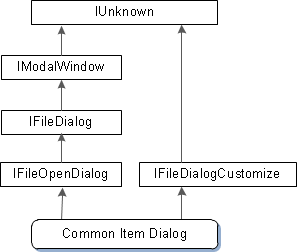
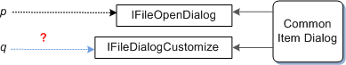

We saw earlier that an object can implement more than one interface. The Common Item Dialog object is a real-world example of this. To support the most typical uses, the object implements the IFileOpenDialog interface. This interface defines basic methods for displaying the dialog box and getting information about the selected file. For more advanced use, however, the object also implements an interface named IFileDialogCustomize. A program can use this interface to customize the appearance and behavior of the dialog box, by adding new UI controls.
Recall that every COM interface must inherit, directly or indirectly, from the IUnknown interface. The following diagram shows the inheritance of the Common Item Dialog object.

As you can see from the diagram, the direct ancestor of IFileOpenDialog is the IFileDialog interface, which in turn inherits IModalWindow. As you go up the inheritance chain from IFileOpenDialog to IModalWindow, the interfaces define increasingly generalized window functionality. Finally, the IModalWindow interface inherits IUnknown. The Common Item Dialog object also implements IFileDialogCustomize, which exists in a separate inheritance chain.
Now suppose that you have a pointer to the IFileOpenDialog interface. How would you get a pointer to the IFileDialogCustomize interface?

Simply casting the IFileOpenDialog pointer to an IFileDialogCustomize pointer will not work. There is no reliable way to "cross cast" across an inheritance hierarchy, without some form of run-time type information (RTTI), which is a highly language-dependent feature.
The COM approach is to ask the object to give you an IFileDialogCustomize pointer, using the first interface as a conduit into the object. This is done by calling the IUnknown::QueryInterface method from the first interface pointer. You can think of QueryInterface as a language-independent version of the dynamic_cast keyword in C++.
The QueryInterface method has the following signature:
HRESULT QueryInterface(REFIID riid, void **ppvObject);
Based on what you already know about CoCreateInstance, you might be able to guess how QueryInterface works.
const GUID&. Notice that the class identifier (CLSID) is not required, because the object has already been created. Only the interface identifier is necessary.Here is how you would call QueryInterface to get an IFileDialogCustomize pointer:
hr = pFileOpen->QueryInterface(IID_IFileDialogCustomize,
reinterpret_cast<void**>(&pCustom));
if (SUCCEEDED(hr))
{
// Use the interface. (Not shown.)
// ...
pCustom->Release();
}
else
{
// Handle the error.
}
As always, check the HRESULT return value, in case the method fails. If the method succeeds, you must call Release when you are done using the pointer, as described in Managing the Lifetime of an Object.
Â
Â